Meet the Team
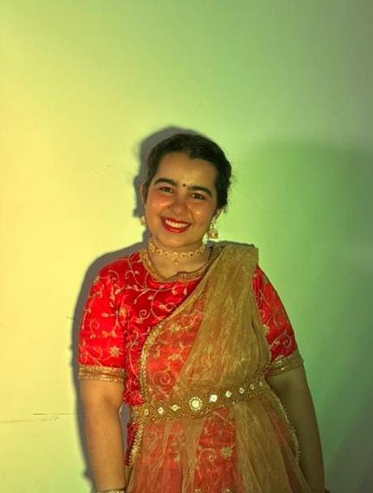
Pratha Nagpal (Chief)
SY - EXCP
A Kathak dancer with over 12 years of training, having completed Visharad and graduated from Bhatkhande Sangeet Samiti. Deeply passionate about dance, Pratha finds joy in every performance and continues to grow as a lifelong learner of this beautiful art form.
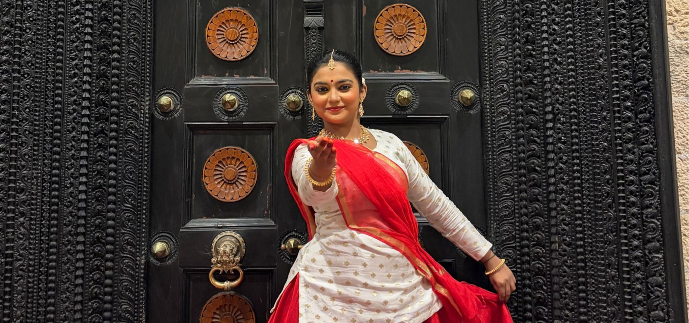
Swanandi Nikam (Co-Chief)
SY - COMPS
A passionate Kathak dancer since 11 years, currently preparing for Visharad Poorna, dedicated to preserving and promoting the rich heritage of Indian classical dance through graceful expressions, intricate footwork, and storytelling.
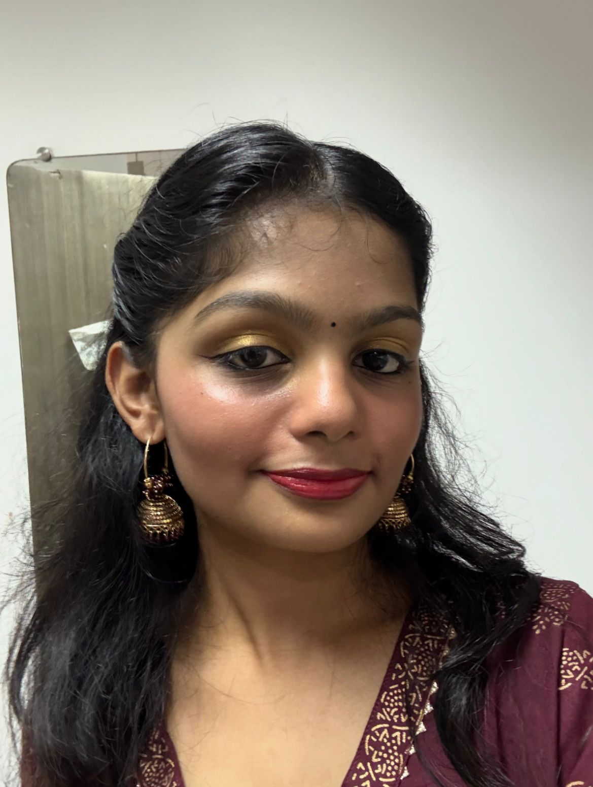
Riya Gupta (Co-Chief)
SY - COMPS
A Kathak dancer with 10 years of dedicated practice, holding certifications from Akhil Bhartiya Gandharva Mahavidyalaya Mandal. She continues her journey with passion, discipline and an ever-evolving artistic spirit.
Team
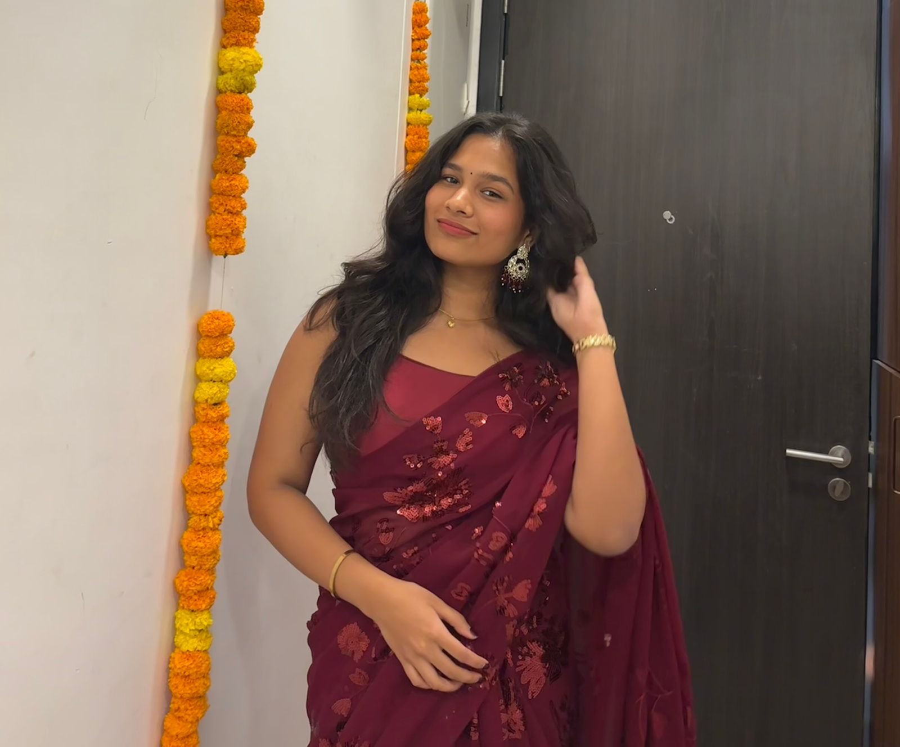
Pooja Vibhute
FY
COMPS
A Kathak enthusiast with over 5 years of dedicated learning, constantly growing through rhythm, expression, and discipline. Every step is a lesson, every performance a new story—still learning, still evolving, and deeply connected to the art.
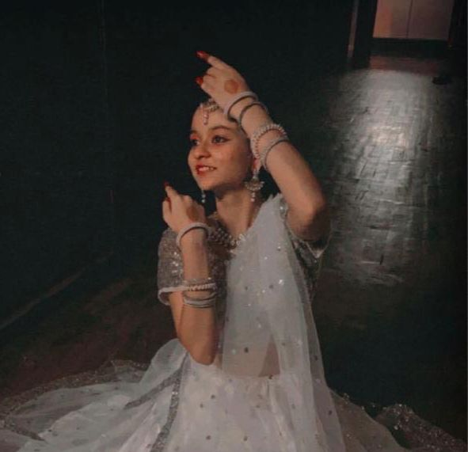
Shreshti Nake
FY
COMPS
Practicing Kathak for over 10 years under the guidance of Guru Vaishnavi Agnihotri, Shreshti is currently at the Madhyama Purna level and has performed in various events. She continues to pursue Kathak as both her passion and a hobby.
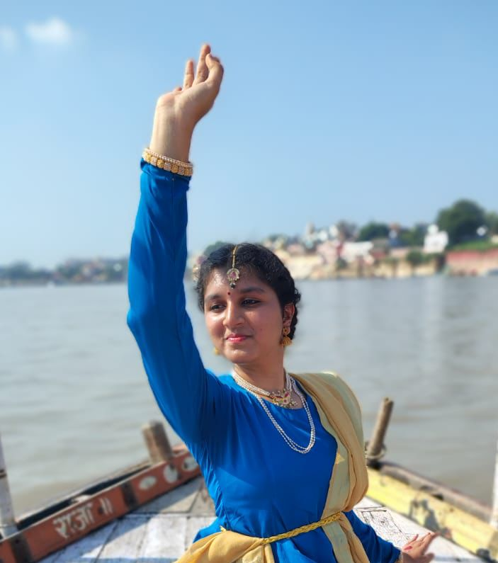
Saee Shinde
FY
VLSI
With about 10 years of training, Saee is pursuing Visharad in Kathak under the able guidance of guru Mrs. Sharddha Bhide, founder of Siddhi Nrityakala Mandir.
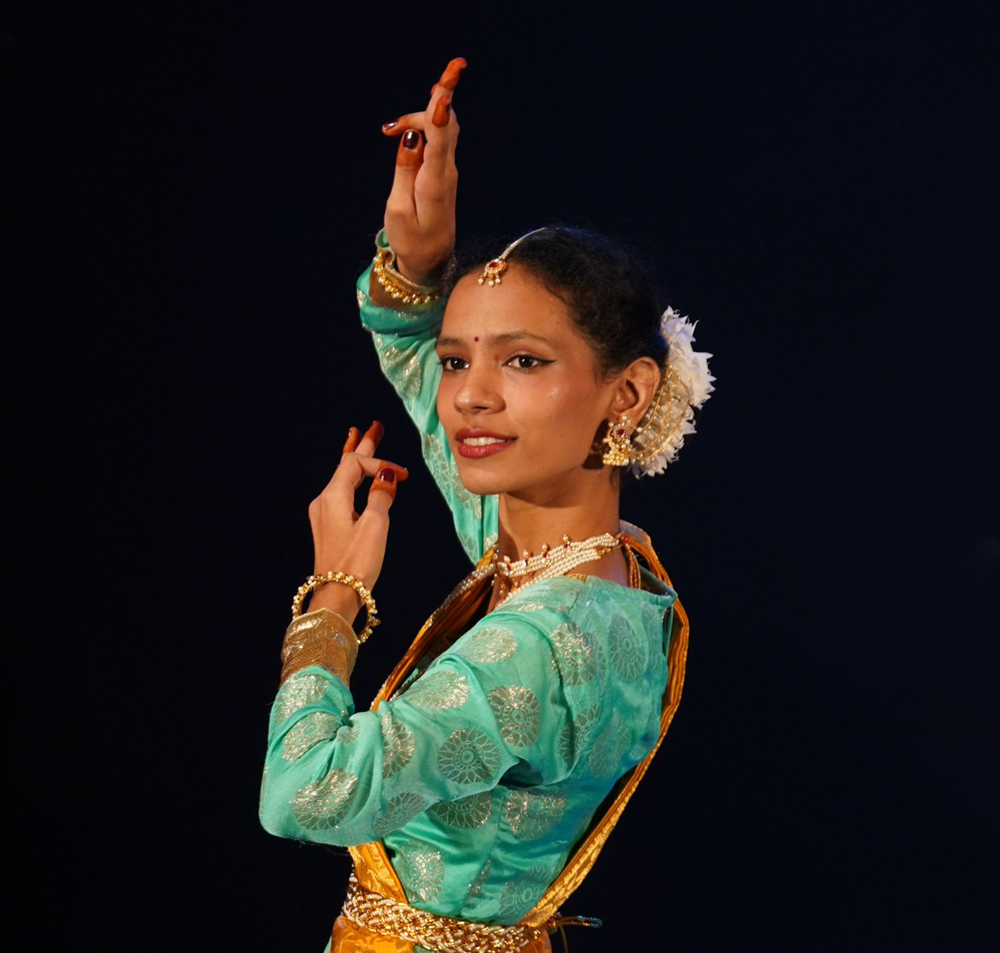
Sai Pol
FY
COMPS
info
Riya
Year
Branch
Position
Anime
Fave
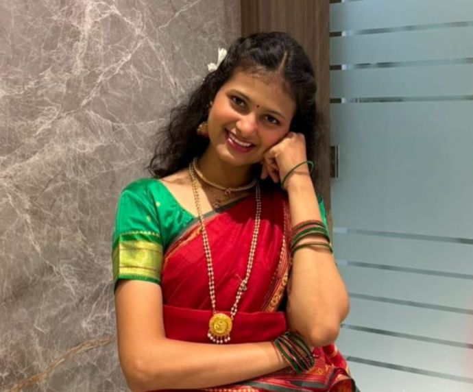
Neoma Kanchan
FY
COMPS
A Bharatanatyam dancer who has been learning this classical dance form for the past four years. This journey has taught Neoma discipline, dedication, and expression through dance. Bharatanatyam is not just a dance for her, but a way to express emotions and stay connected to our culture and traditions.
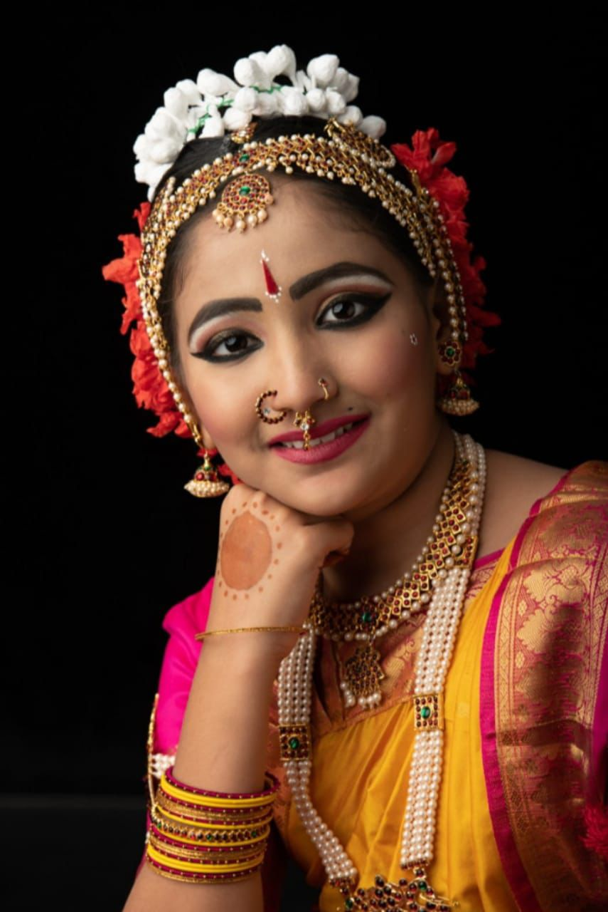
Shachi Jain
FY
AI & DS
A Bharatnatyam dancer from Utkarsh Dance Academy, Surat. with over 14 years of training. Completed Arangetram along with Visharad and Alankar, and continues to refine her artistry through workshops with renowned gurus.
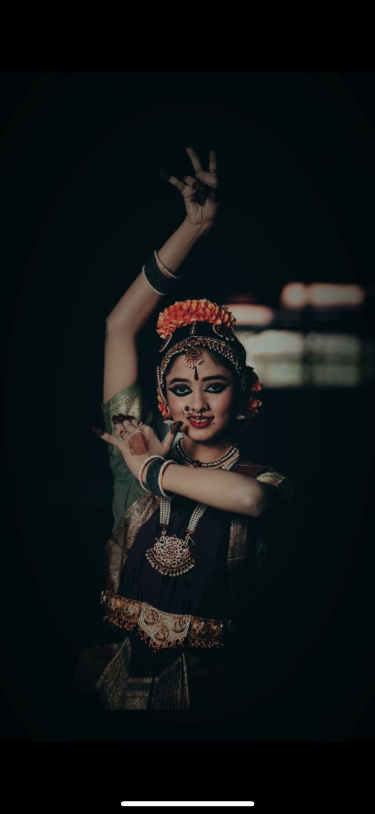
Shruti Pramoth
FY
COMPS
Being a learnt bharatnatyam dancer since 15 years from the age of 3 to present, Shruti continues to pursue the divine art after completing her arangetram at the age of 14.
She has experience of dancing in India’s largest auditoriums well as performing for temple rituals.
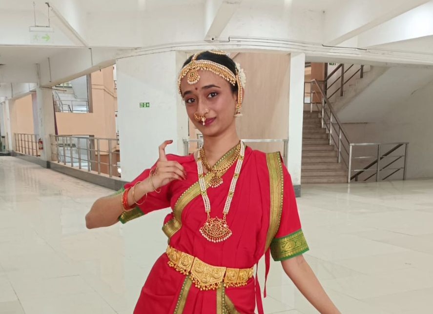
Sachita Reddy
FY
VLSI
A passionate Bharatnatyam dancer with over 7 years of training and performance experience, rooted in strong classical foundations. Sachita is dedicated to expressing storytelling through graceful movements and continuous learning in this traditional art form.
Avani
FY
COMPS
info
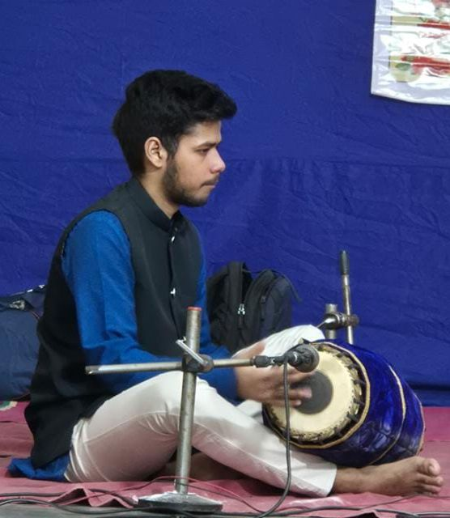
Pranav Srikrishnan
SY
COMPS
info
Malhar Kulkarni
SY
COMPS
info